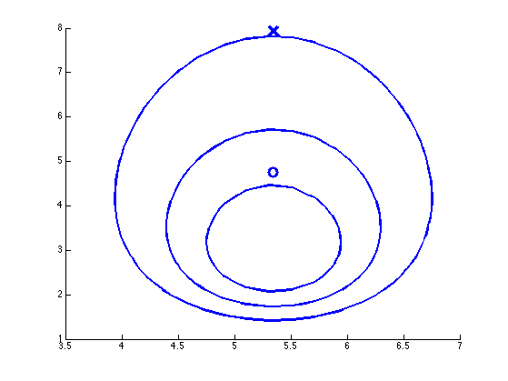
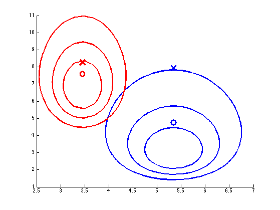
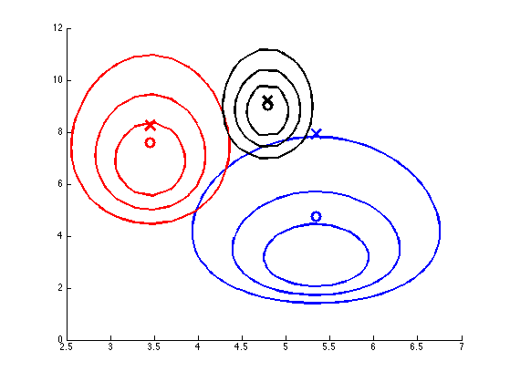
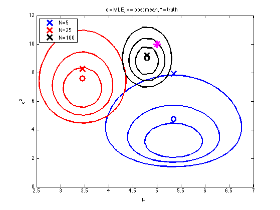

Sequential Bayesian updating of (mu,sigma) for a 1D gaussian
Contents
Uninformative prior
% This file is from pmtk3.googlecode.com m0 = 0; k0 = 0; v0 = 0; % 0.01; S0 = 0; % 0.01;
Sample data
truth.mu = 5; truth.Sigma = 10; setSeed(1); X = colvec(gaussSample(truth, 100)); xyrange = [-5 15 eps 15]; figure; hold on; [styles, colors, symbols] = plotColors(); % ns = [5 25 100]; str = {}; ncontours = 3; for i=1:length(ns)
n = ns(i);
data = X(1:n);
xbar = mean(data);
Xc = data-xbar;
XX = (Xc'*Xc)/n;
Update
post.k = k0 + n;
post.dof = v0 + n;
post.Sigma = (S0 + n*XX + (k0*n)/(k0+n)*(xbar-m0)*(xbar-m0)');
post.mu = (k0*m0 + n*xbar)/post.k;
Plot
hat = posterior mean
muHat = post.mu;
sigma2Hat = post.Sigma/post.dof * (post.dof/(post.dof-2));
h(i) = plot(muHat, sigma2Hat, 'X', 'markersize' , 15 , ...
'linewidth' , 3 , ...
'color' , colors(i));
str{i} = sprintf('N=%d',n);
plot(xbar, var(data,1), 'o', 'markersize' , 10 , ...
'linewidth' , 3 , ...
'color' , colors(i));
fn = @(x)exp(gaussInvWishartLogprob(post, x(:, 1), x(:, 2)));
plotContour(fn, xyrange, 'ncontours', ncontours, ...
'color' , colors(i) ,...
'linestyle', '-', ...
'linewidth' , 2);
   end
plot(truth.mu, truth.Sigma, '*', 'markersize' , 15 , ... 'linewidth' , 3 , ... 'color' , 'm'); legend(h, str, 'location', 'NorthWest'); xlabel(sprintf('%s', '\mu')) ylabel(sprintf('%s', '\sigma^2')) %axis([-4 8 0 12]) %grid on box on title(sprintf('o = MLE, x = post mean, * = truth')) %set(gca, 'xtick', -2:2:8); printPmtkFigure muSigmaPost